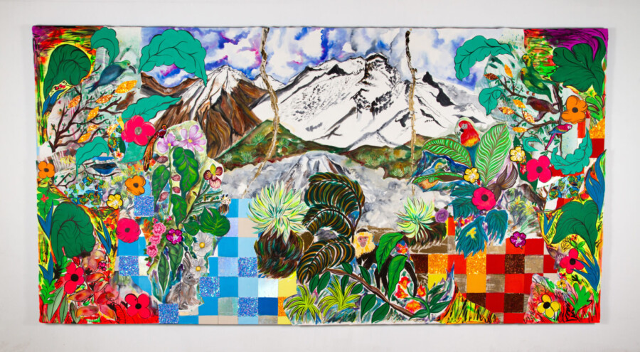

My Mother Mountain
Join UIC Gallery 400 for the reception of our summer exhibition, My Mother Mountain.
Food and drinks will be provided.
In her debut solo Chicago exhibition, Carolyn Castaño presents paintings, watercolors, and works in other media exploring the disappearing glaciers of Colombia’s Andean glaciers. Drawing on a range of sources, including the Wiphala flag (a multi-colored, multi-squared flag of Indigenous Andean people), pre-Columbian textiles, and 19th- century travelogues and maps by European colonial explorers, Castaño’s vibrant, highly patterned paintings consider the legacy of colonialism, industrialization, and capitalism on human and other-than-human life.
My Mother Mountain features monumental and smaller scale works that play on early representations of Andean landscapes, from the botanical collections and studies of Alexander Von Humboldt and romantic landscape paintings such as those of Frederic Edwin Church, to more documentary/cartographic representations from the Comisión Corográfica, a mid-19th century survey of the area that was to become Colombia. In today’s climate crisis, Castaño’s work directly challenges these early romantic representations that fueled resource extraction.
ABOUT
Born, raised, and based in Los Angeles, Carolyn Castaño is a Colombian-American artist who works across painting, installation, video, and artist books. She has presented solo exhibitions at the Craft Contemporary and the Orange County Museum of Art. Her work has been featured in group exhibitions at the Los Angeles County Museum, the 56th Venice Biennale, and at Yerba Buena Center for the Arts in San Francisco, notably in their recent Bay Area Then show. Last year, she was awarded a Guggenheim Fellowship in Fine Arts. Previously, she received a 2013 Joan Mitchell Foundation Grant, and fellowships from the California Community Foundation and the City of Los Angeles. She holds a BFA from the San Francisco Art Institute and MFA from UCLA and is now a Professor of Drawing and Painting at Long Beach City College.